Optics shlukování – Vývoj
Generace 0
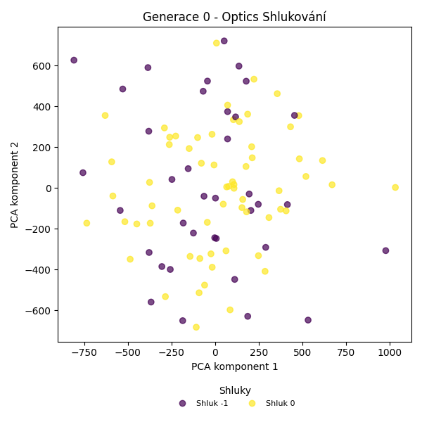


Generace 1

Posun centroidů mezi generací 0 → 1:
- Shluk 0: 1033.6489

Generace 2


Posun centroidů mezi generací 1 → 2:
- Shluk 0: 1259.2608

Generace 3

Posun centroidů mezi generací 2 → 3:
- Shluk 0: 213.3321
- Shluk 1: 567.0977
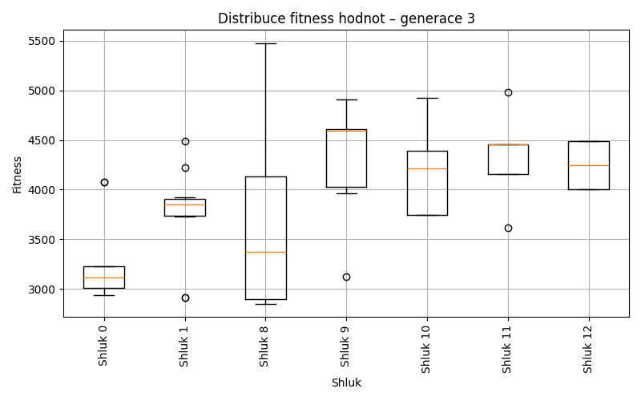
Generace 4

Posun centroidů mezi generací 3 → 4:
- Shluk 0: 213.3321
- Shluk 1: 545.3729
- Shluk 2: 716.4107

Generace 5


Posun centroidů mezi generací 4 → 5:
- Shluk 0: 31.3629

Generace 6


Posun centroidů mezi generací 5 → 6:
- Shluk 0: 31.3629

Generace 7


Posun centroidů mezi generací 6 → 7:
- Shluk 0: 0.0000
- Shluk 1: 371.5291
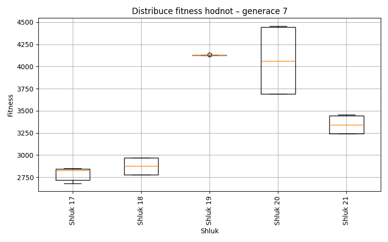
Generace 8


Posun centroidů mezi generací 7 → 8:
- Shluk 0: 35.7369
- Shluk 1: 505.9567
- Shluk 2: 570.1962
- Shluk 3: 658.9438
- Shluk 4: 831.9161
- Shluk 5: 609.5398
- Shluk 6: 660.2124
- Shluk 7: 478.8829
- Shluk 8: 450.1488
- Shluk 9: 666.4466

Generace 9

Posun centroidů mezi generací 8 → 9:
- Shluk 0: 1539.8132
- Shluk 1: 770.8681
- Shluk 2: 404.6949
- Shluk 3: 513.3939
- Shluk 4: 357.4271
- Shluk 5: 569.9394
- Shluk 6: 917.3555
- Shluk 7: 915.5612

Generace 10


Posun centroidů mezi generací 9 → 10:
- Shluk 0: 62.7675
- Shluk 1: 82.8541
- Shluk 2: 861.4238
- Shluk 3: 114.7267
- Shluk 4: 407.3044
- Shluk 5: 651.6573
- Shluk 6: 601.3146
- Shluk 7: 338.3787
Generace 11
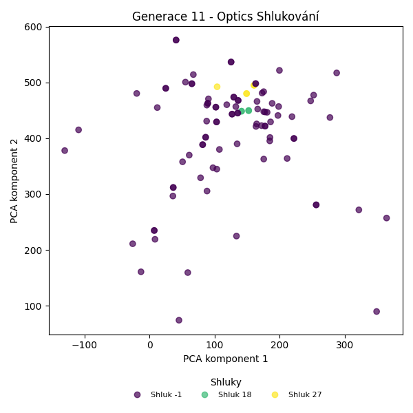
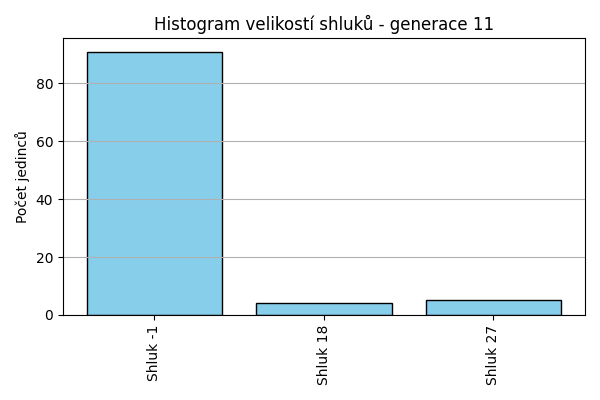
Posun centroidů mezi generací 10 → 11:
- Shluk 0: 0.0000
- Shluk 1: 186.0587
- Shluk 2: 456.8747
- Shluk 3: 404.2140
- Shluk 4: 363.8620
- Shluk 5: 335.8574
- Shluk 6: 143.4047
- Shluk 7: 536.6188
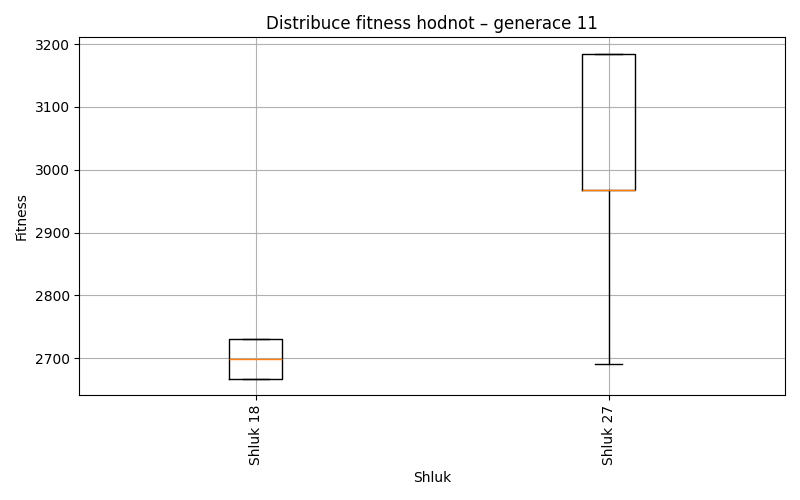
Generace 12

Posun centroidů mezi generací 11 → 12:
- Shluk 0: 77.6061
- Shluk 1: 1305.5763
- Shluk 2: 603.2271
- Shluk 3: 156.3969
- Shluk 4: 530.9021
- Shluk 5: 665.1591

Generace 13

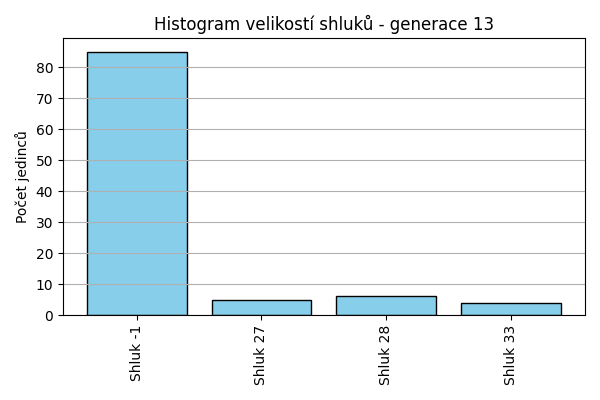
Posun centroidů mezi generací 12 → 13:
- Shluk 0: 71.3095
- Shluk 1: 1292.8648
- Shluk 2: 379.6081
- Shluk 3: 965.8863
- Shluk 4: 1167.5643
- Shluk 5: 448.0004

Generace 14

Posun centroidů mezi generací 13 → 14:
- Shluk 0: 69.0241
- Shluk 1: 438.0451
- Shluk 2: 67.4226
- Shluk 3: 1195.2767
- Shluk 4: 738.9751

Generace 15

Posun centroidů mezi generací 14 → 15:
- Shluk 0: 14.4029
- Shluk 1: 433.1547
- Shluk 2: 231.9235
- Shluk 3: 312.8437
- Shluk 4: 892.9533
Generace 16
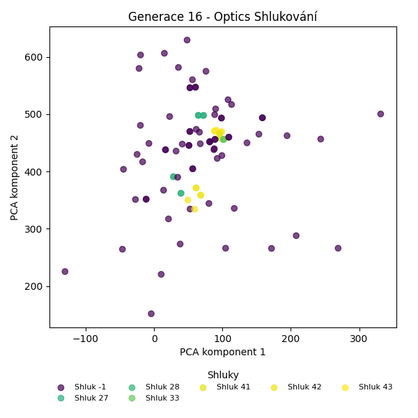
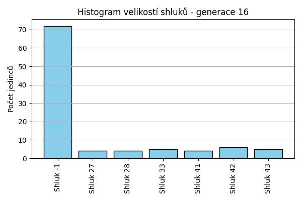
Posun centroidů mezi generací 15 → 16:
- Shluk 0: 98.1897
- Shluk 1: 1167.7214
- Shluk 2: 581.2918
- Shluk 3: 263.4899
- Shluk 4: 46.8615
- Shluk 5: 605.2328
- Shluk 6: 569.6909
- Shluk 7: 1139.7254
- Shluk 8: 915.6721

Generace 17
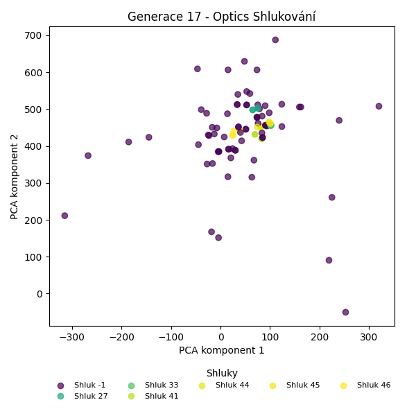
Posun centroidů mezi generací 16 → 17:
- Shluk 0: 101.1423
- Shluk 1: 148.5393
- Shluk 2: 46.1334
- Shluk 3: 177.4135
- Shluk 4: 403.5148
- Shluk 5: 222.0461
- Shluk 6: 175.4928
- Shluk 7: 450.8462
- Shluk 8: 89.9893

Generace 18


Posun centroidů mezi generací 17 → 18:
- Shluk 0: 115.7190
- Shluk 1: 403.1671
- Shluk 2: 56.4515
- Shluk 3: 577.4752
- Shluk 4: 80.6771
- Shluk 5: 40.0941
- Shluk 6: 216.9872
- Shluk 7: 209.0231
- Shluk 8: 542.5753
Generace 19
Posun centroidů mezi generací 18 → 19:
- Shluk 0: 1652.7375
- Shluk 1: 887.1999
- Shluk 2: 394.0655
- Shluk 3: 432.2394
- Shluk 4: 837.2308
Generace 20

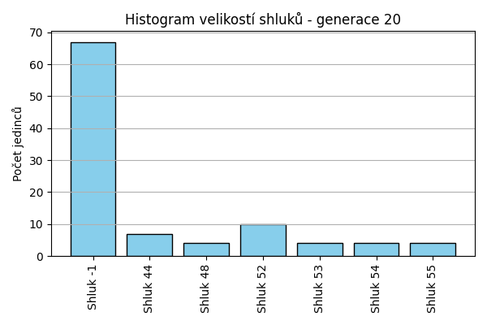
Posun centroidů mezi generací 19 → 20:
- Shluk 0: 43.1196
- Shluk 1: 28.6679
- Shluk 2: 457.2652
- Shluk 3: 596.6148
- Shluk 4: 834.7009
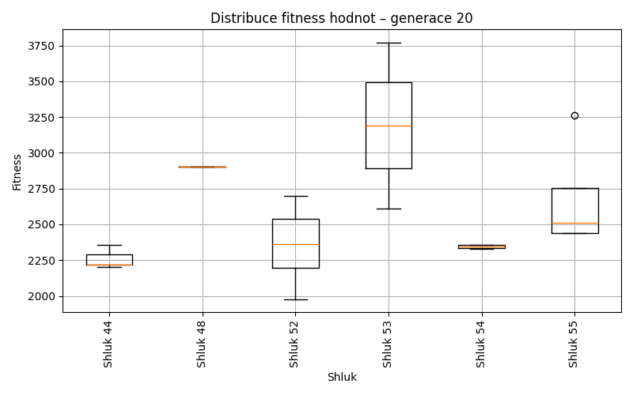
Generace 21

Posun centroidů mezi generací 20 → 21:
- Shluk 0: 219.6572
- Shluk 1: 171.6226
- Shluk 2: 38.9744
- Shluk 3: 38.0804
- Shluk 4: 127.0306
- Shluk 5: 221.4307
- Shluk 6: 784.4273
Generace 22
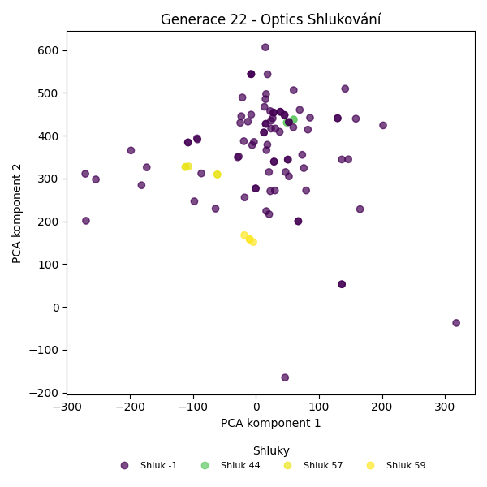

Posun centroidů mezi generací 21 → 22:
- Shluk 0: 207.8501
- Shluk 1: 170.9913
- Shluk 2: 54.1901
- Shluk 3: 86.3689
- Shluk 4: 229.8605
- Shluk 5: 273.5307
- Shluk 6: 761.1136

Generace 23
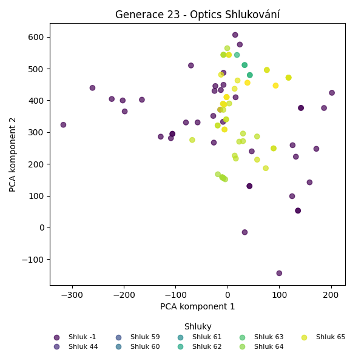

Posun centroidů mezi generací 22 → 23:
- Shluk 0: 11.5468
- Shluk 1: 48.5829
- Shluk 2: 93.8738
- Shluk 3: 270.9226

Generace 24

Posun centroidů mezi generací 23 → 24:
- Shluk 0: 374.9908
- Shluk 1: 3.4299
- Shluk 2: 94.0173
- Shluk 3: 344.7362

Generace 25
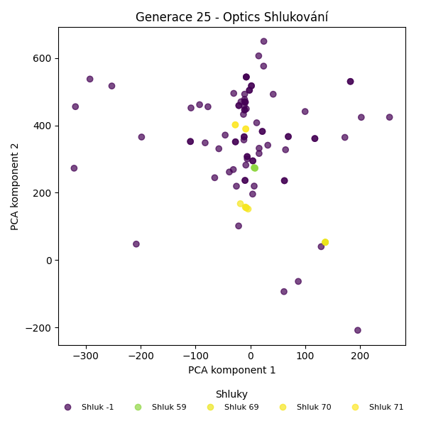

Posun centroidů mezi generací 24 → 25:
- Shluk 0: 187.4097
- Shluk 1: 3.0950
- Shluk 2: 53.1015
- Shluk 3: 23.5641
- Shluk 4: 154.3680
Generace 26

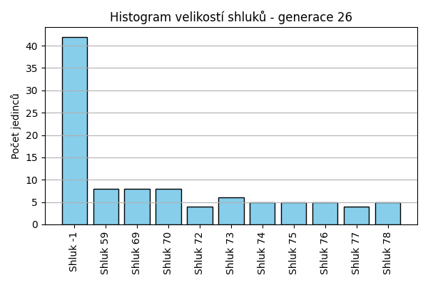
Posun centroidů mezi generací 25 → 26:
- Shluk 0: 192.4798
- Shluk 1: 59.4469
- Shluk 2: 259.2111

Generace 27

Posun centroidů mezi generací 26 → 27:
- Shluk 0: 39.2461
- Shluk 1: 62.1497
- Shluk 2: 44.0355
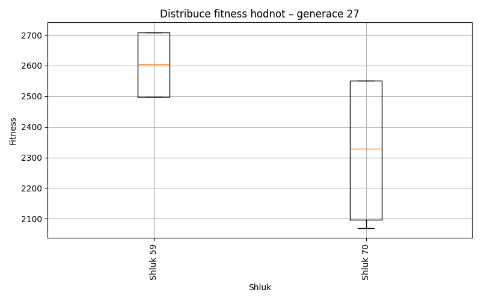
Generace 28

Posun centroidů mezi generací 27 → 28:
- Shluk 0: 114.1376
- Shluk 1: 7.4790
- Shluk 2: 158.5501
- Shluk 3: 47.0087

Generace 29

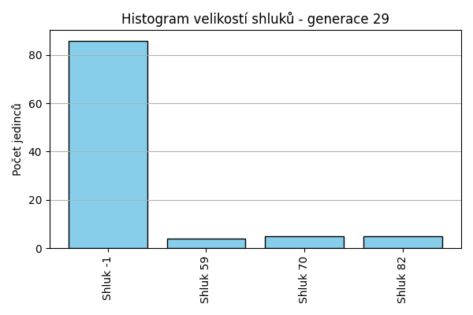
Posun centroidů mezi generací 28 → 29:
- Shluk 0: 10.9794
- Shluk 1: 4.7340
- Shluk 2: 122.8410

Generace 30


Posun centroidů mezi generací 29 → 30:
- Shluk 0: 439.7874
- Shluk 1: 93.7496
- Shluk 2: 145.2939
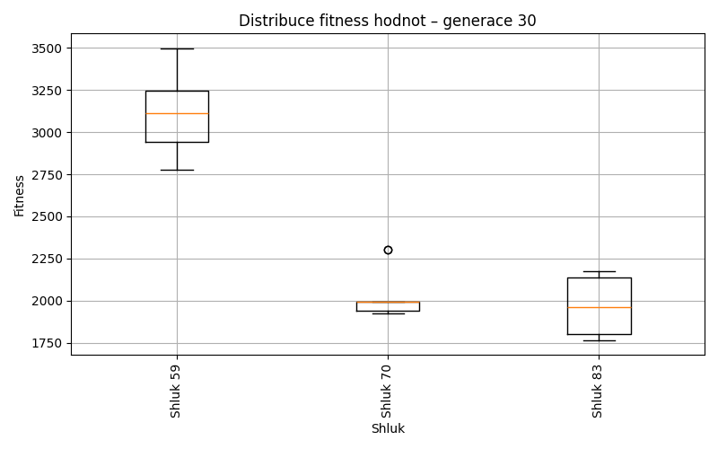
Generace 31

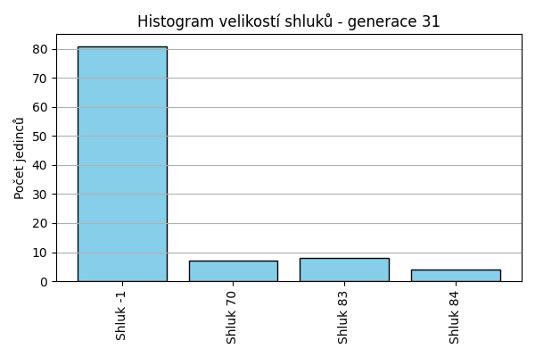
Posun centroidů mezi generací 30 → 31:
- Shluk 0: 333.4362
- Shluk 1: 379.7156
- Shluk 2: 55.6491
- Shluk 3: 61.7785
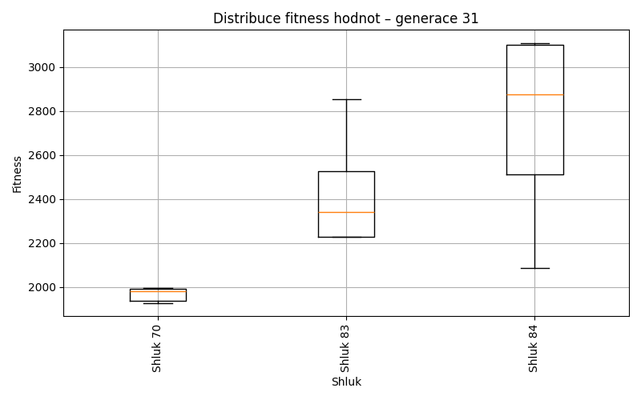
Generace 32
Posun centroidů mezi generací 31 → 32:
- Shluk 0: 370.1262
- Shluk 1: 363.2921
- Shluk 2: 85.6622
- Shluk 3: 48.4085
Generace 33
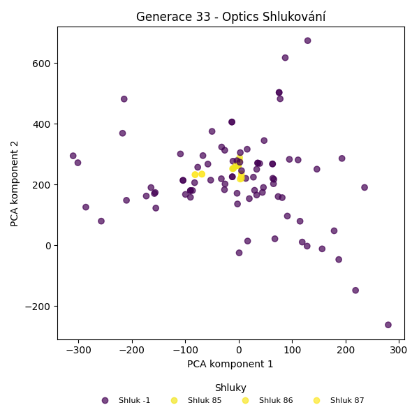

Posun centroidů mezi generací 32 → 33:
- Shluk 0: 437.3002
- Shluk 1: 103.8716
- Shluk 2: 107.8208
- Shluk 3: 216.9647
- Shluk 4: 394.9330

Generace 34


Posun centroidů mezi generací 33 → 34:
- Shluk 0: 294.4099
- Shluk 1: 1.4745
- Shluk 2: 143.8568
- Shluk 3: 110.4509
Generace 35

Posun centroidů mezi generací 34 → 35:
- Shluk 0: 0.6737
- Shluk 1: 11.3046
- Shluk 2: 38.0610
- Shluk 3: 118.1241

Generace 36
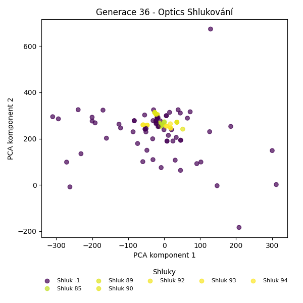
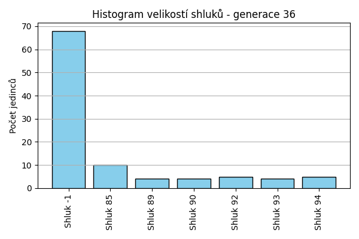
Posun centroidů mezi generací 35 → 36:
- Shluk 0: 118.5031
- Shluk 1: 116.0262
- Shluk 2: 71.0098
- Shluk 3: 81.4379
- Shluk 4: 89.5617
- Shluk 5: 401.5146
- Shluk 6: 575.4606

Generace 37
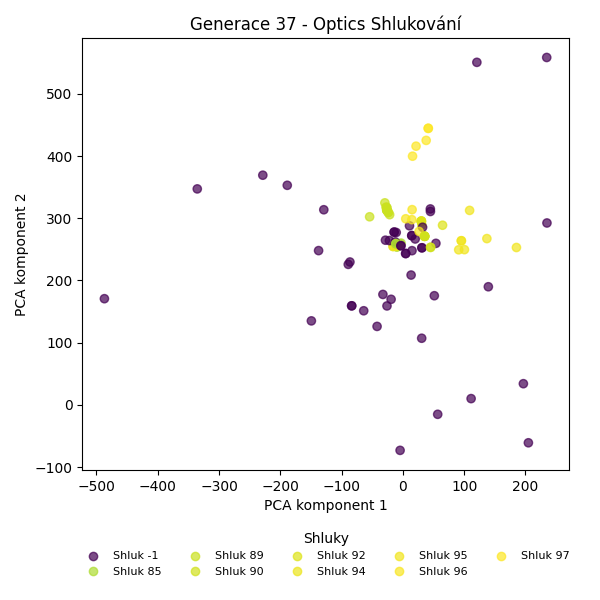
Posun centroidů mezi generací 36 → 37:
- Shluk 0: 63.8209
- Shluk 1: 121.5994
- Shluk 2: 60.4906
- Shluk 3: 13.2807
- Shluk 4: 138.6319
- Shluk 5: 204.7756
- Shluk 6: 680.7750
Generace 38

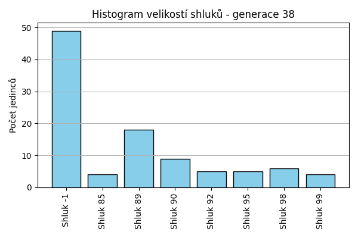
Posun centroidů mezi generací 37 → 38:
- Shluk 0: 93.5838
- Shluk 1: 12.4527
- Shluk 2: 5.0844
- Shluk 3: 178.3284
- Shluk 4: 401.2524
- Shluk 5: 581.3943

Generace 39


Posun centroidů mezi generací 38 → 39:
- Shluk 0: 3.2397
- Shluk 1: 3.5783
- Shluk 2: 9.0291
- Shluk 3: 420.9633
- Shluk 4: 187.0257
- Shluk 5: 674.4382

Generace 40

Posun centroidů mezi generací 39 → 40:
- Shluk 0: 524.9225
- Shluk 1: 260.3099
- Shluk 2: 7.9536
- Shluk 3: 377.1754
- Shluk 4: 187.5200

Generace 41

Posun centroidů mezi generací 40 → 41:
- Shluk 0: 63.2756
- Shluk 1: 134.1157
- Shluk 2: 274.5223
- Shluk 3: 13.0910
- Shluk 4: 7.6895
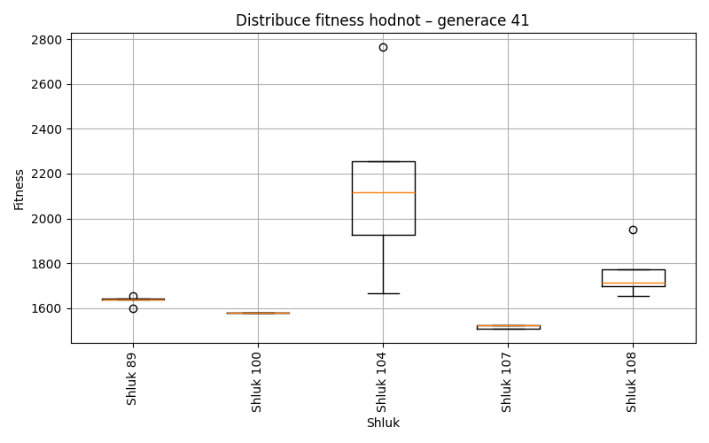
Generace 42


Posun centroidů mezi generací 41 → 42:
- Shluk 0: 560.5987
- Shluk 1: 312.7308
- Shluk 2: 275.6541
- Shluk 3: 1.3871
- Shluk 4: 14.0182
- Shluk 5: 12.8841
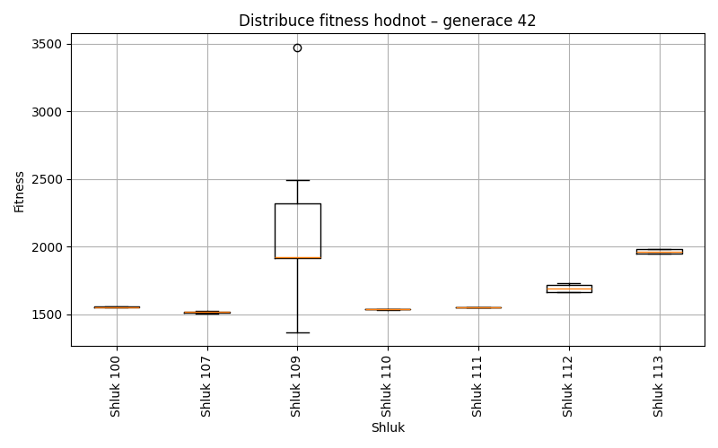
Generace 43
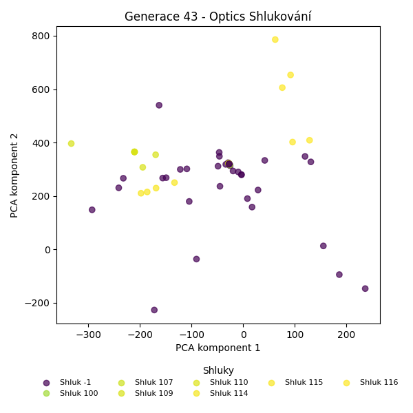

Posun centroidů mezi generací 42 → 43:
- Shluk 0: 20.1393
- Shluk 1: 6.6328
- Shluk 2: 6.6269
- Shluk 3: 1.7533
- Shluk 4: 1.1584
- Shluk 5: 86.5452
- Shluk 6: 59.9485
- Shluk 7: 27.3239
- Shluk 8: 271.1666
Generace 44


Posun centroidů mezi generací 43 → 44:
- Shluk 0: 299.6868
- Shluk 1: 6.3751
- Shluk 2: 0.0000
- Shluk 3: 1.3646
- Shluk 4: 4.2481
- Shluk 5: 555.5078
- Shluk 6: 390.7599
- Shluk 7: 643.6728
Generace 45

Posun centroidů mezi generací 44 → 45:
- Shluk 0: 266.8465
- Shluk 1: 287.4464
- Shluk 2: 142.3403
- Shluk 3: 4.0658
- Shluk 4: 3.8277
- Shluk 5: 12.5503
Generace 46
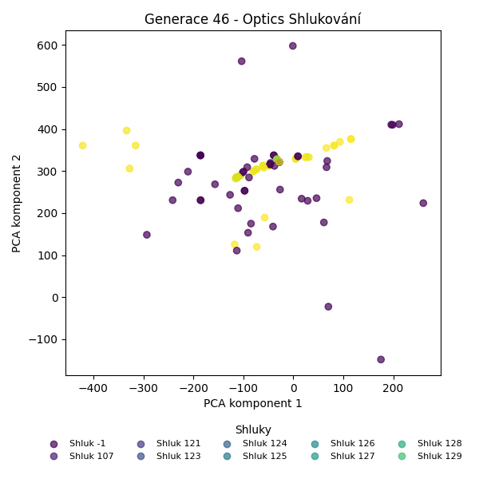
Posun centroidů mezi generací 45 → 46:
- Shluk 0: 451.6116
- Shluk 1: 288.4462
- Shluk 2: 51.8341
- Shluk 3: 158.9511
- Shluk 4: 108.2123
- Shluk 5: 899.3065
Generace 47
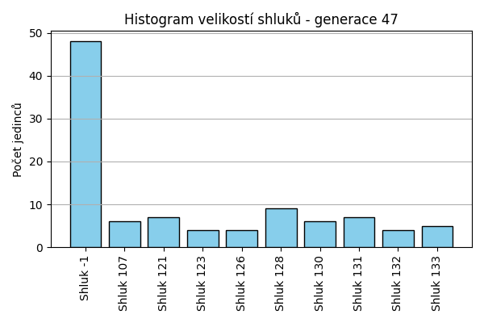
Posun centroidů mezi generací 46 → 47:
- Shluk 0: 431.4234
- Shluk 1: 275.0415
- Shluk 2: 93.6145
- Shluk 3: 390.4474
- Shluk 4: 305.1664
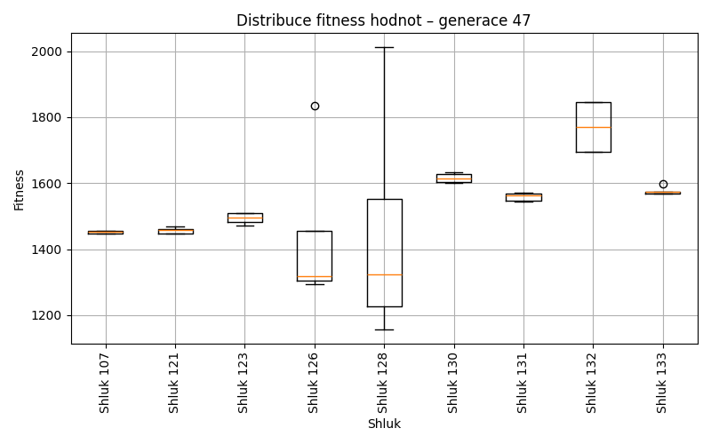
Generace 48


Posun centroidů mezi generací 47 → 48:
- Shluk 0: 97.0062
- Shluk 1: 5.6881
- Shluk 2: 186.0853
- Shluk 3: 443.5519
- Shluk 4: 586.1283
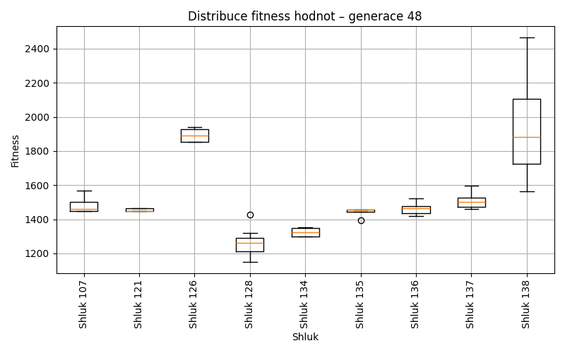
Generace 49


Posun centroidů mezi generací 48 → 49:
- Shluk 0: 120.3689
- Shluk 1: 271.9308
- Shluk 2: 186.8698
- Shluk 3: 219.3942
- Shluk 4: 734.9474
- Shluk 5: 266.1781

Generace 50

Posun centroidů mezi generací 49 → 50:
- Shluk 0: 740.6295
- Shluk 1: 17.3972
- Shluk 2: 182.7442
- Shluk 3: 224.6245
- Shluk 4: 193.6998
- Shluk 5: 45.1826

Generace 51


Posun centroidů mezi generací 50 → 51:
- Shluk 0: 0.0000
- Shluk 1: 560.8597
- Shluk 2: 436.1027
- Shluk 3: 268.5348
- Shluk 4: 365.2408
- Shluk 5: 475.3510
- Shluk 6: 367.3055
- Shluk 7: 199.0808
- Shluk 8: 318.5565
- Shluk 9: 711.1353
Generace 52

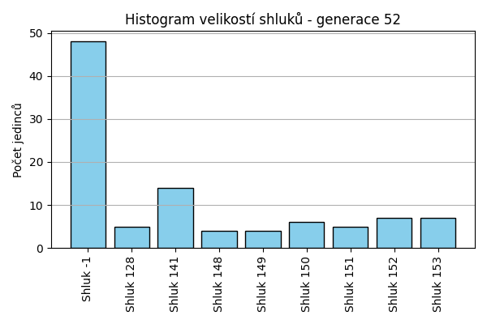
Posun centroidů mezi generací 51 → 52:
- Shluk 0: 6.2926
- Shluk 1: 50.5580
- Shluk 2: 146.7655
- Shluk 3: 156.4305
- Shluk 4: 180.3992
- Shluk 5: 1.5708
- Shluk 6: 377.9998

Generace 53

Posun centroidů mezi generací 52 → 53:
- Shluk 0: 8.4206
- Shluk 1: 502.3422
- Shluk 2: 290.5393
- Shluk 3: 123.1675
- Shluk 4: 642.4689
- Shluk 5: 144.9958
- Shluk 6: 426.5145
Generace 54

Posun centroidů mezi generací 53 → 54:
- Shluk 0: 423.7370
- Shluk 1: 260.3723
- Shluk 2: 123.3078
- Shluk 3: 10.5392
- Shluk 4: 647.3452
- Shluk 5: 285.0949
- Shluk 6: 293.7509
- Shluk 7: 690.9753
Generace 55


Posun centroidů mezi generací 54 → 55:
- Shluk 0: 74.9630
- Shluk 1: 133.2883
- Shluk 2: 119.1783
- Shluk 3: 2.4604
- Shluk 4: 131.8732
- Shluk 5: 27.7396
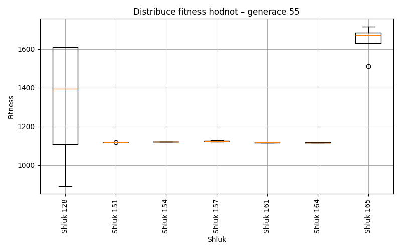
Generace 56
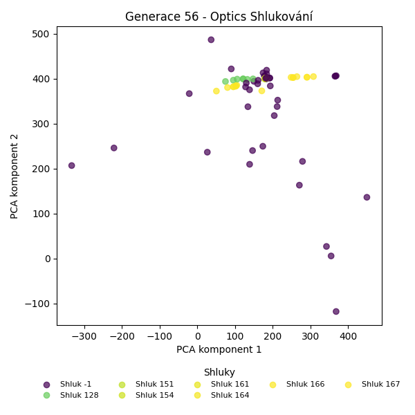
Posun centroidů mezi generací 55 → 56:
- Shluk 0: 348.8073
- Shluk 1: 238.6919
- Shluk 2: 169.5748
- Shluk 3: 5.8156
- Shluk 4: 132.8389
- Shluk 5: 532.7375

Generace 57


Posun centroidů mezi generací 56 → 57:
- Shluk 0: 14.0424
- Shluk 1: 365.3930
- Shluk 2: 171.7109
- Shluk 3: 7.0746
- Shluk 4: 90.6099
- Shluk 5: 420.0617
Generace 58


Posun centroidů mezi generací 57 → 58:
- Shluk 0: 16.5580
- Shluk 1: 3.9359
- Shluk 2: 4.8747
- Shluk 3: 0.0000
- Shluk 4: 56.9697
- Shluk 5: 211.5320
- Shluk 6: 113.2548
- Shluk 7: 184.6719
- Shluk 8: 47.5185
Generace 59

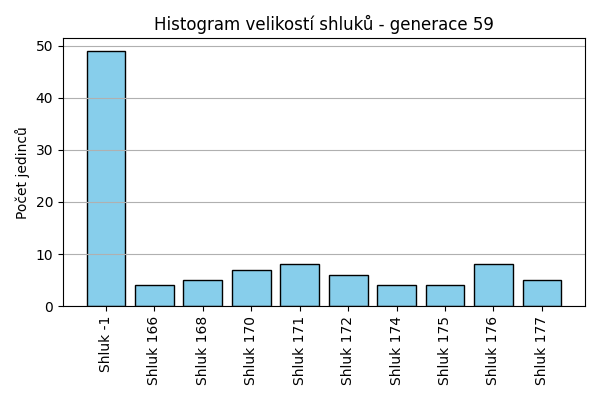
Posun centroidů mezi generací 58 → 59:
- Shluk 0: 8.0280
- Shluk 1: 552.8557
- Shluk 2: 451.5604
- Shluk 3: 372.8541
- Shluk 4: 32.1241
- Shluk 5: 122.6663
- Shluk 6: 16.5748
- Shluk 7: 183.0638
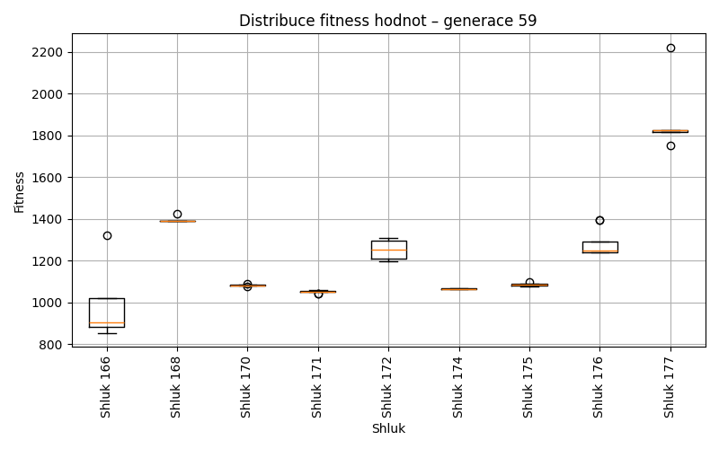
Generace 60
Posun centroidů mezi generací 59 → 60:
- Shluk 0: 6.1860
- Shluk 1: 544.5044
- Shluk 2: 176.5080
- Shluk 3: 278.6952
- Shluk 4: 646.1165
- Shluk 5: 257.4302
- Shluk 6: 3.3033
- Shluk 7: 266.9523

Generace 61

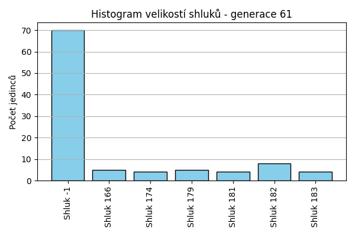
Posun centroidů mezi generací 60 → 61:
- Shluk 0: 2.1970
- Shluk 1: 455.1172
- Shluk 2: 231.7649
- Shluk 3: 1.8240
- Shluk 4: 48.5370
- Shluk 5: 192.9779
- Shluk 6: 166.3810
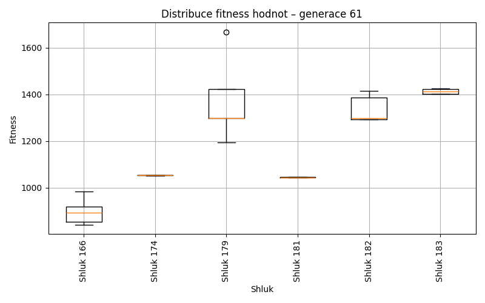
Generace 62

Posun centroidů mezi generací 61 → 62:
- Shluk 0: 1.6566
- Shluk 1: 127.9617

Generace 63


Posun centroidů mezi generací 62 → 63:
- Shluk 0: 127.4949
- Shluk 1: 147.8221
Generace 64

Posun centroidů mezi generací 63 → 64:
- Shluk 0: 127.6044
- Shluk 1: 2.6430
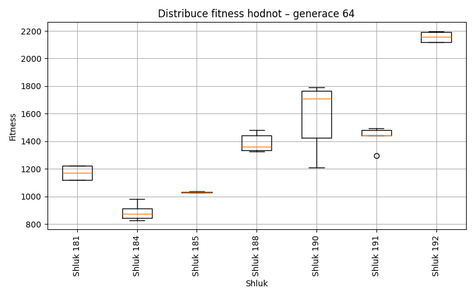
Generace 65

Posun centroidů mezi generací 64 → 65:
- Shluk 0: 2.6430
- Shluk 1: 2.6430
- Shluk 2: 5.3164
- Shluk 3: 351.9455
- Shluk 4: 282.5473

Generace 66
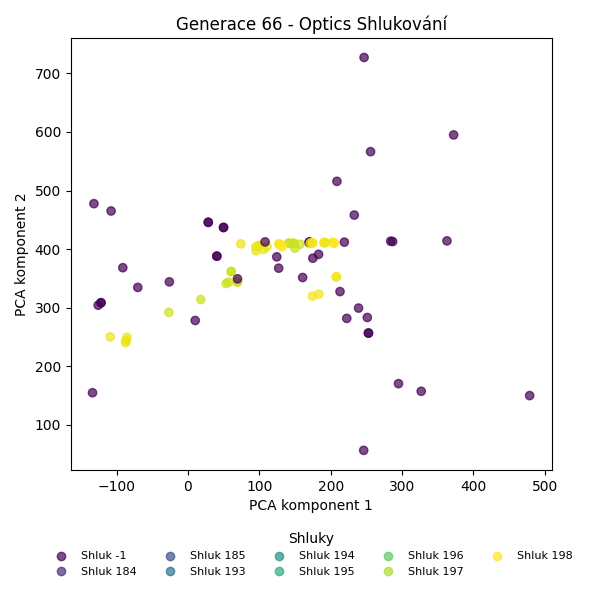

Posun centroidů mezi generací 65 → 66:
- Shluk 0: 114.3309
- Shluk 1: 3.0027
- Shluk 2: 7.6050
- Shluk 3: 441.0760
- Shluk 4: 240.2666
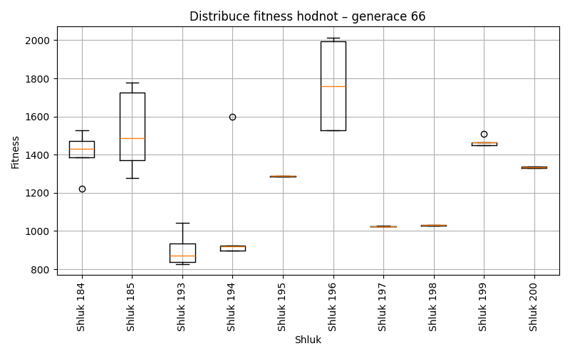
Generace 67
Posun centroidů mezi generací 66 → 67:
- Shluk 0: 114.3410
- Shluk 1: 2.8099
- Shluk 2: 0.0000
- Shluk 3: 253.1009
- Shluk 4: 401.4533
- Shluk 5: 304.2654

Generace 68

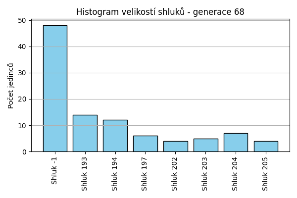
Posun centroidů mezi generací 67 → 68:
- Shluk 0: 94.4401
- Shluk 1: 0.1101
- Shluk 2: 13.1925
- Shluk 3: 152.7624
- Shluk 4: 160.3201
- Shluk 5: 276.8876

Generace 69

Posun centroidů mezi generací 68 → 69:
- Shluk 0: 7.7925
- Shluk 1: 3.7633
- Shluk 2: 2.0175
- Shluk 3: 97.1301
- Shluk 4: 242.5388

Generace 70

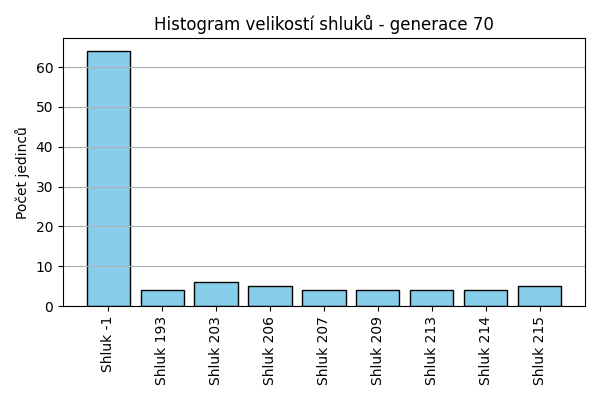
Posun centroidů mezi generací 69 → 70:
- Shluk 0: 96.7351
- Shluk 1: 148.7803
- Shluk 2: 258.4899
- Shluk 3: 256.8738
- Shluk 4: 296.7928

Generace 71
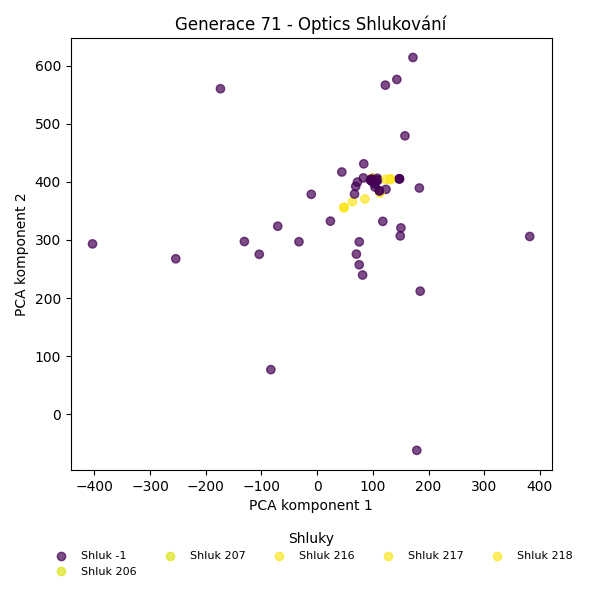

Posun centroidů mezi generací 70 → 71:
- Shluk 0: 59.5634
- Shluk 1: 92.9726
- Shluk 2: 64.5448
- Shluk 3: 126.0352
- Shluk 4: 297.8668
- Shluk 5: 806.7610
- Shluk 6: 183.6575

Generace 72
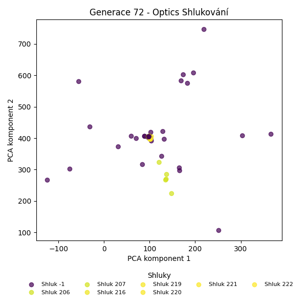

Posun centroidů mezi generací 71 → 72:
- Shluk 0: 222.9629
- Shluk 1: 191.7349
- Shluk 2: 104.1301
- Shluk 3: 126.7583
- Shluk 4: 443.0937
- Shluk 5: 527.4481
- Shluk 6: 182.9737
- Shluk 7: 374.4982
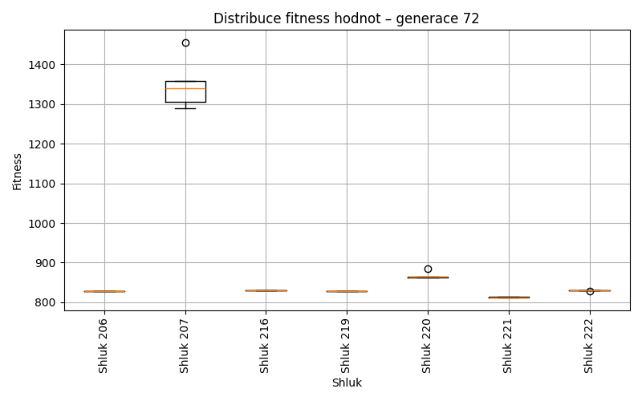
Generace 73

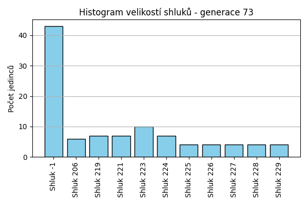
Posun centroidů mezi generací 72 → 73:
- Shluk 0: 75.9014
- Shluk 1: 173.6959
- Shluk 2: 112.8356
- Shluk 3: 122.3034
- Shluk 4: 445.6539
- Shluk 5: 236.3534
- Shluk 6: 236.1562
- Shluk 7: 333.0269

Generace 74
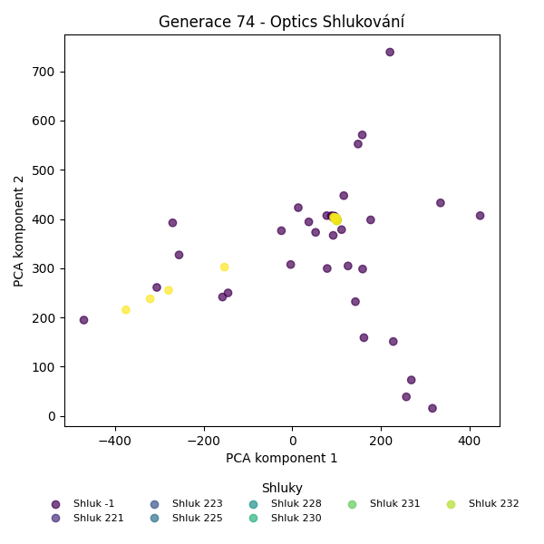
Posun centroidů mezi generací 73 → 74:
- Shluk 0: 32.5450
- Shluk 1: 134.1169
- Shluk 2: 191.9828
- Shluk 3: 154.8491
- Shluk 4: 459.0889
- Shluk 5: 664.1181
Generace 75

Posun centroidů mezi generací 74 → 75:
- Shluk 0: 68.1695
- Shluk 1: 218.1273
- Shluk 2: 19.3254
- Shluk 3: 276.9006
- Shluk 4: 49.7690
- Shluk 5: 948.0662
Generace 76
Posun centroidů mezi generací 75 → 76:
- Shluk 0: 90.1454
- Shluk 1: 369.3882
- Shluk 2: 445.7504

Generace 77

Posun centroidů mezi generací 76 → 77:
- Shluk 0: 346.0728
- Shluk 1: 5.5968
- Shluk 2: 225.3293

Generace 78

Posun centroidů mezi generací 77 → 78:
- Shluk 0: 371.5719
- Shluk 1: 276.8238
- Shluk 2: 217.6952
- Shluk 3: 445.6069
- Shluk 4: 917.2759
- Shluk 5: 943.7042

Generace 79
Posun centroidů mezi generací 78 → 79:
- Shluk 0: 479.3241
- Shluk 1: 222.5499
- Shluk 2: 310.0592
- Shluk 3: 235.5534
- Shluk 4: 407.6252
- Shluk 5: 973.2489

Generace 80

Posun centroidů mezi generací 79 → 80:
- Shluk 0: 726.0859
- Shluk 1: 261.7294
- Shluk 2: 218.3254
- Shluk 3: 276.1998
- Shluk 4: 489.3140
- Shluk 5: 884.4406
- Shluk 6: 691.7879
- Shluk 7: 852.5496
Generace 81

Posun centroidů mezi generací 80 → 81:
- Shluk 0: 44.9248
- Shluk 1: 739.1361
- Shluk 2: 649.3082
- Shluk 3: 103.6161
- Shluk 4: 191.5800
- Shluk 5: 269.6846
- Shluk 6: 586.9541
- Shluk 7: 441.2066

Generace 82

Posun centroidů mezi generací 81 → 82:
- Shluk 0: 18.8173
- Shluk 1: 725.3584
- Shluk 2: 647.9589
- Shluk 3: 159.5169
- Shluk 4: 191.8291
- Shluk 5: 347.3565
- Shluk 6: 386.2225
- Shluk 7: 390.6152

Generace 83

Posun centroidů mezi generací 82 → 83:
- Shluk 0: 0.0000
- Shluk 1: 361.5132
- Shluk 2: 559.0679
- Shluk 3: 810.1763
- Shluk 4: 276.8792

Generace 84

Posun centroidů mezi generací 83 → 84:
- Shluk 0: 0.0000
- Shluk 1: 200.6743
- Shluk 2: 459.0817
- Shluk 3: 377.0382
- Shluk 4: 411.6365

Generace 85


Posun centroidů mezi generací 84 → 85:
- Shluk 0: 0.8022
- Shluk 1: 408.7415
- Shluk 2: 369.7216
- Shluk 3: 7.1636
- Shluk 4: 340.1968
- Shluk 5: 687.1404
- Shluk 6: 189.8967
- Shluk 7: 444.3831

Generace 86
Posun centroidů mezi generací 85 → 86:
- Shluk 0: 0.0000
- Shluk 1: 373.0372
- Shluk 2: 325.6237
- Shluk 3: 47.5372
- Shluk 4: 561.2951
- Shluk 5: 750.9780

Generace 87
Posun centroidů mezi generací 86 → 87:
- Shluk 0: 1.5156
- Shluk 1: 180.6142
- Shluk 2: 228.1360
- Shluk 3: 50.8437
- Shluk 4: 234.9237
- Shluk 5: 753.5474
Generace 88
Posun centroidů mezi generací 87 → 88:
- Shluk 0: 3.1013
- Shluk 1: 185.5124
- Shluk 2: 228.0674
- Shluk 3: 477.1124
- Shluk 4: 521.8357
- Shluk 5: 10.9410
- Shluk 6: 386.1788

Generace 89


Posun centroidů mezi generací 88 → 89:
- Shluk 0: 0.0000
- Shluk 1: 77.8890
- Shluk 2: 2.9282
- Shluk 3: 459.4899
- Shluk 4: 360.2937
- Shluk 5: 731.8523
- Shluk 6: 371.1998

Generace 90
Posun centroidů mezi generací 89 → 90:
- Shluk 0: 0.0000
- Shluk 1: 210.5027
- Shluk 2: 380.5199
- Shluk 3: 366.7764
- Shluk 4: 337.1034
- Shluk 5: 195.2941
- Shluk 6: 382.9170
- Shluk 7: 1030.8378
Generace 91

Posun centroidů mezi generací 90 → 91:
- Shluk 0: 0.0000
- Shluk 1: 1.0008
- Shluk 2: 1.9855
- Shluk 3: 95.7355
- Shluk 4: 198.9296
- Shluk 5: 96.3393
- Shluk 6: 104.4425

Generace 92
Posun centroidů mezi generací 91 → 92:
- Shluk 0: 0.0000
- Shluk 1: 0.0000
- Shluk 2: 0.0000
- Shluk 3: 3.0110
- Shluk 4: 9.3734

Generace 93

Posun centroidů mezi generací 92 → 93:
- Shluk 0: 5.2420
- Shluk 1: 0.6879
- Shluk 2: 1.2030
- Shluk 3: 2.7278

Generace 94

Posun centroidů mezi generací 93 → 94:
- Shluk 0: 0.0000
- Shluk 1: 4.5901
- Shluk 2: 2.3747
- Shluk 3: 0.5220
Generace 95

Posun centroidů mezi generací 94 → 95:
- Shluk 0: 484.5091
- Shluk 1: 261.7659
- Shluk 2: 2.6210
- Shluk 3: 4.6863
- Shluk 4: 6.0538
- Shluk 5: 322.5972
Generace 96


Posun centroidů mezi generací 95 → 96:
- Shluk 0: 34.2686
- Shluk 1: 30.7773
- Shluk 2: 0.6789
- Shluk 3: 1.2511
- Shluk 4: 1.2407
- Shluk 5: 5.2463

Generace 97


Posun centroidů mezi generací 96 → 97:
- Shluk 0: 0.0000
- Shluk 1: 32.9009
- Shluk 2: 0.8465
- Shluk 3: 1.2174
- Shluk 4: 2.2813
- Shluk 5: 0.5144
Generace 98

Posun centroidů mezi generací 97 → 98:
- Shluk 0: 18.9477
- Shluk 1: 20.5244
- Shluk 2: 158.3001
- Shluk 3: 0.8450
- Shluk 4: 0.0819
- Shluk 5: 0.1447

Generace 99

Posun centroidů mezi generací 98 → 99:
- Shluk 0: 18.6041
- Shluk 1: 3.0775
- Shluk 2: 110.0880
- Shluk 3: 0.3564
- Shluk 4: 0.6159
- Shluk 5: 0.3625
- Shluk 6: 392.3376
- Shluk 7: 666.9156
- Shluk 8: 924.6640

Generace 100

Posun centroidů mezi generací 99 → 100:
- Shluk 0: 7.3226
- Shluk 1: 117.0699
- Shluk 2: 3.3676
- Shluk 3: 0.1885
- Shluk 4: 0.2804
- Shluk 5: 0.2634
- Shluk 6: 392.3618
Generace 101

Posun centroidů mezi generací 100 → 101:
- Shluk 0: 1.1493
- Shluk 1: 123.2373
- Shluk 2: 1.7754
- Shluk 3: 253.6122
- Shluk 4: 131.0297
- Shluk 5: 1.8068
- Shluk 6: 3.5991
Generace 102

Posun centroidů mezi generací 101 → 102:
- Shluk 0: 7.2196
- Shluk 1: 19.1137
- Shluk 2: 246.5719
- Shluk 3: 253.6243
- Shluk 4: 131.2914
- Shluk 5: 336.2004
- Shluk 6: 386.4654
- Shluk 7: 192.5974
- Shluk 8: 381.0951

Generace 103

Posun centroidů mezi generací 102 → 103:
- Shluk 0: 6.8972
- Shluk 1: 19.1137
- Shluk 2: 12.8130
- Shluk 3: 526.3030
- Shluk 4: 158.7084
- Shluk 5: 16.9520
- Shluk 6: 134.7662
- Shluk 7: 114.1560
- Shluk 8: 291.6932

Generace 104
Posun centroidů mezi generací 103 → 104:
- Shluk 0: 2.7086
- Shluk 1: 6.4414
- Shluk 2: 4.6293
- Shluk 3: 8.5659
- Shluk 4: 97.9890
- Shluk 5: 191.5007
- Shluk 6: 270.5363
- Shluk 7: 442.0073
- Shluk 8: 192.6301
Generace 105


Posun centroidů mezi generací 104 → 105:
- Shluk 0: 1.7301
- Shluk 1: 2.9151
- Shluk 2: 2.2989
- Shluk 3: 1.9696
- Shluk 4: 9.4646

Generace 106

Posun centroidů mezi generací 105 → 106:
- Shluk 0: 112.9547
- Shluk 1: 7.3306
- Shluk 2: 10.0715
- Shluk 3: 5.3274
- Shluk 4: 11.7155
Generace 107

Posun centroidů mezi generací 106 → 107:
- Shluk 0: 113.1475
- Shluk 1: 5.5882
- Shluk 2: 11.5118
- Shluk 3: 5.2573
- Shluk 4: 3.8448

Generace 108

Posun centroidů mezi generací 107 → 108:
- Shluk 0: 125.2099
- Shluk 1: 3.1502
- Shluk 2: 4.0891
- Shluk 3: 20.5048
- Shluk 4: 347.7172
- Shluk 5: 970.2040
Generace 109

Posun centroidů mezi generací 108 → 109:
- Shluk 0: 15.1629
- Shluk 1: 3.0400
- Shluk 2: 9.7754
- Shluk 3: 1.7380
- Shluk 4: 389.4339
- Shluk 5: 828.0720
- Shluk 6: 34.7401
Generace 110


Posun centroidů mezi generací 109 → 110:
- Shluk 0: 104.2658
- Shluk 1: 94.5491
- Shluk 2: 0.0000
- Shluk 3: 5.8768
- Shluk 4: 192.3666
- Shluk 5: 348.3114
- Shluk 6: 190.0886
Generace 111

Posun centroidů mezi generací 110 → 111:
- Shluk 0: 99.3712
- Shluk 1: 43.8619
- Shluk 2: 9.4918
- Shluk 3: 5.8768
- Shluk 4: 10.9853
- Shluk 5: 373.0681
- Shluk 6: 556.5475
- Shluk 7: 626.3347
- Shluk 8: 733.6055
Generace 112
Posun centroidů mezi generací 111 → 112:
- Shluk 0: 101.8285
- Shluk 1: 52.5955
- Shluk 2: 9.0658
- Shluk 3: 0.5211
- Shluk 4: 186.0657
- Shluk 5: 28.8101
- Shluk 6: 35.4445
- Shluk 7: 672.5010
- Shluk 8: 246.3704

Generace 113

Posun centroidů mezi generací 112 → 113:
- Shluk 0: 14.6627
- Shluk 1: 3.8210
- Shluk 2: 11.4389
- Shluk 3: 97.8447
- Shluk 4: 182.0865
- Shluk 5: 507.7957
- Shluk 6: 35.4445
Generace 114

Posun centroidů mezi generací 113 → 114:
- Shluk 0: 0.0000
- Shluk 1: 103.4012
- Shluk 2: 9.2308
- Shluk 3: 107.0111
- Shluk 4: 417.2131
- Shluk 5: 507.5566
- Shluk 6: 765.8088

Generace 115

Posun centroidů mezi generací 114 → 115:
- Shluk 0: 519.2674
- Shluk 1: 220.4401
- Shluk 2: 2.5017
- Shluk 3: 303.5157
- Shluk 4: 415.7365
- Shluk 5: 371.6766
Generace 116

Posun centroidů mezi generací 115 → 116:
- Shluk 0: 519.2674
- Shluk 1: 282.9543
- Shluk 2: 112.0241
- Shluk 3: 223.2919
- Shluk 4: 229.9534
- Shluk 5: 562.1556

Generace 117
Posun centroidů mezi generací 116 → 117:
- Shluk 0: 18.5002
- Shluk 1: 21.7049
- Shluk 2: 49.8069
- Shluk 3: 106.1688
- Shluk 4: 86.0664
- Shluk 5: 774.4644
Generace 118

Posun centroidů mezi generací 117 → 118:
- Shluk 0: 9.4344
- Shluk 1: 0.3468
- Shluk 2: 375.2623
- Shluk 3: 360.7294
- Shluk 4: 523.7101
- Shluk 5: 752.0070

Generace 119

Posun centroidů mezi generací 118 → 119:
- Shluk 0: 725.3933
- Shluk 1: 9.0796
- Shluk 2: 388.2129
- Shluk 3: 354.7219
- Shluk 4: 422.6100
- Shluk 5: 510.0629

Generace 120
Posun centroidů mezi generací 119 → 120:
- Shluk 0: 724.2205
- Shluk 1: 0.7127
- Shluk 2: 0.4658
- Shluk 3: 2.3042
- Shluk 4: 250.0605
- Shluk 5: 536.3297
- Shluk 6: 414.1998
- Shluk 7: 368.2268
Generace 121


Posun centroidů mezi generací 120 → 121:
- Shluk 0: 737.9177
- Shluk 1: 390.8722
- Shluk 2: 186.6761
- Shluk 3: 8.1977
- Shluk 4: 180.3805
- Shluk 5: 386.8974
- Shluk 6: 384.8189
- Shluk 7: 506.2102

Generace 122

Posun centroidů mezi generací 121 → 122:
- Shluk 0: 11.9127
- Shluk 1: 17.0130
- Shluk 2: 185.1912
- Shluk 3: 3.4680
- Shluk 4: 3.4872
Generace 123

Posun centroidů mezi generací 122 → 123:
- Shluk 0: 44.7413
- Shluk 1: 387.4077
- Shluk 2: 0.3464
- Shluk 3: 4.3449
- Shluk 4: 2.2922
Generace 124


Posun centroidů mezi generací 123 → 124:
- Shluk 0: 44.1519
- Shluk 1: 556.2050
- Shluk 2: 370.0694
- Shluk 3: 5.7709
- Shluk 4: 5.0054
- Shluk 5: 2.2310
- Shluk 6: 368.9624

Generace 125
Posun centroidů mezi generací 124 → 125:
- Shluk 0: 1.0203
- Shluk 1: 556.4537
- Shluk 2: 270.0674
- Shluk 3: 249.1498
- Shluk 4: 367.4996
- Shluk 5: 368.0692
- Shluk 6: 369.0114

Generace 126

Posun centroidů mezi generací 125 → 126:
- Shluk 0: 3.2883
- Shluk 1: 735.2294
- Shluk 2: 452.3119
- Shluk 3: 110.2748
- Shluk 4: 187.2240
- Shluk 5: 366.9373
- Shluk 6: 367.6162
Generace 127

Posun centroidů mezi generací 126 → 127:
- Shluk 0: 3.7129
- Shluk 1: 5.3718
- Shluk 2: 183.1966
- Shluk 3: 264.0802
- Shluk 4: 371.6315
- Shluk 5: 371.3250
- Shluk 6: 272.4243
- Shluk 7: 393.6448
Generace 128

Posun centroidů mezi generací 127 → 128:
- Shluk 0: 7.4119
- Shluk 1: 3.9775
- Shluk 2: 4.1793
- Shluk 3: 113.0227
- Shluk 4: 100.4275
- Shluk 5: 184.1988
- Shluk 6: 206.3257
- Shluk 7: 362.7427
Generace 129

Posun centroidů mezi generací 128 → 129:
- Shluk 0: 2.0344
- Shluk 1: 8.4956
- Shluk 2: 5.5531
- Shluk 3: 6.5054
- Shluk 4: 84.3398
- Shluk 5: 134.4497
- Shluk 6: 143.7956
- Shluk 7: 178.7758

Generace 130
Posun centroidů mezi generací 129 → 130:
- Shluk 0: 229.8519
- Shluk 1: 1.1557
- Shluk 2: 0.7118
- Shluk 3: 9.7849
- Shluk 4: 82.8660

Generace 131

Posun centroidů mezi generací 130 → 131:
- Shluk 0: 229.6589
- Shluk 1: 6.1115
- Shluk 2: 9.4899
- Shluk 3: 4.6831
- Shluk 4: 86.6770

Generace 132


Posun centroidů mezi generací 131 → 132:
- Shluk 0: 422.2901
- Shluk 1: 5.7013
- Shluk 2: 5.8807
- Shluk 3: 2.1079
- Shluk 4: 0.7732
- Shluk 5: 113.2933

Generace 133


Posun centroidů mezi generací 132 → 133:
- Shluk 0: 422.9947
- Shluk 1: 10.7544
- Shluk 2: 5.7624
- Shluk 3: 3.4182
- Shluk 4: 2.3557
- Shluk 5: 1.7976

Generace 134

Posun centroidů mezi generací 133 → 134:
- Shluk 0: 334.9044
- Shluk 1: 5.6773
- Shluk 2: 5.3323
- Shluk 3: 15.9885
- Shluk 4: 21.7312
- Shluk 5: 662.2438

Generace 135

Posun centroidů mezi generací 134 → 135:
- Shluk 0: 45.6060
- Shluk 1: 154.5010
- Shluk 2: 3.0474
- Shluk 3: 1.0360
- Shluk 4: 3.9912
- Shluk 5: 662.6133
Generace 136
Posun centroidů mezi generací 135 → 136:
- Shluk 0: 509.5666
- Shluk 1: 154.3488
- Shluk 2: 7.6551
- Shluk 3: 5.4231
- Shluk 4: 4.6919
- Shluk 5: 4.0954
- Shluk 6: 365.7082
Generace 137

Posun centroidů mezi generací 136 → 137:
- Shluk 0: 298.1167
- Shluk 1: 352.0948
- Shluk 2: 176.5477
- Shluk 3: 1.0366
- Shluk 4: 1.4736
- Shluk 5: 3.3429
- Shluk 6: 365.7801

Generace 138

Posun centroidů mezi generací 137 → 138:
- Shluk 0: 77.3170
- Shluk 1: 10.9236
- Shluk 2: 75.7409
- Shluk 3: 1.1394
- Shluk 4: 0.2657
- Shluk 5: 1.5898
- Shluk 6: 0.1448
- Shluk 7: 631.8147

Generace 139
Posun centroidů mezi generací 138 → 139:
- Shluk 0: 51.9880
- Shluk 1: 11.3795
- Shluk 2: 100.8278
- Shluk 3: 0.8666
- Shluk 4: 1.3522
- Shluk 5: 2.8253

Generace 140

Posun centroidů mezi generací 139 → 140:
- Shluk 0: 46.8240
- Shluk 1: 352.1996
- Shluk 2: 0.3996
- Shluk 3: 1.0594
- Shluk 4: 0.1773
- Shluk 5: 0.9697
Generace 141


Posun centroidů mezi generací 140 → 141:
- Shluk 0: 1.1021
- Shluk 1: 353.0743
- Shluk 2: 205.4413
- Shluk 3: 0.5478
- Shluk 4: 0.4547
- Shluk 5: 0.5944
- Shluk 6: 358.6001

Generace 142


Posun centroidů mezi generací 141 → 142:
- Shluk 0: 0.9490
- Shluk 1: 0.4433
- Shluk 2: 31.0326
- Shluk 3: 92.2902
- Shluk 4: 0.5709
- Shluk 5: 0.0888
- Shluk 6: 216.8663
Generace 143

Posun centroidů mezi generací 142 → 143:
- Shluk 0: 0.0918
- Shluk 1: 88.4950
- Shluk 2: 176.6346
- Shluk 3: 84.1142
- Shluk 4: 81.7612
- Shluk 5: 9.2852

Generace 144


Posun centroidů mezi generací 143 → 144:
- Shluk 0: 352.7140
- Shluk 1: 16.1815
- Shluk 2: 176.2952
- Shluk 3: 528.1475
- Shluk 4: 623.5280
- Shluk 5: 28.9930

Generace 145


Posun centroidů mezi generací 144 → 145:
- Shluk 0: 353.1534
- Shluk 1: 275.8474
- Shluk 2: 176.6544
- Shluk 3: 6.0993

Generace 146

Posun centroidů mezi generací 145 → 146:
- Shluk 0: 4.5424
- Shluk 1: 6.5967
- Shluk 2: 0.8265
- Shluk 3: 4.7611

Generace 147


Posun centroidů mezi generací 146 → 147:
- Shluk 0: 388.6287
- Shluk 1: 6.0422
- Shluk 2: 3.8399
- Shluk 3: 5.1786
- Shluk 4: 120.6915
- Shluk 5: 330.1097
- Shluk 6: 337.9091
- Shluk 7: 567.2081
Generace 148
Posun centroidů mezi generací 147 → 148:
- Shluk 0: 388.5089
- Shluk 1: 7.2477
- Shluk 2: 5.2835
- Shluk 3: 5.4490
- Shluk 4: 5.7417
- Shluk 5: 4.0098
- Shluk 6: 354.3769
- Shluk 7: 404.7314
Generace 149
Posun centroidů mezi generací 148 → 149:
- Shluk 0: 703.8864
- Shluk 1: 6.9009
- Shluk 2: 4.1371
- Shluk 3: 1.2879
- Shluk 4: 1.1156
- Shluk 5: 2.7431
- Shluk 6: 17.6321
- Shluk 7: 540.7201

Generace 150

Posun centroidů mezi generací 149 → 150:
- Shluk 0: 703.8997
- Shluk 1: 0.0407
- Shluk 2: 353.4908
- Shluk 3: 705.5761

Generace 151


Posun centroidů mezi generací 150 → 151:
- Shluk 0: 694.4838
- Shluk 1: 1.7285
- Shluk 2: 353.5037
- Shluk 3: 705.5833
Generace 152

Posun centroidů mezi generací 151 → 152:
- Shluk 0: 16.6386
- Shluk 1: 2.1183
- Shluk 2: 1.5172
- Shluk 3: 2.1891
- Shluk 4: 358.4670
- Shluk 5: 375.2737
Generace 153

Posun centroidů mezi generací 152 → 153:
- Shluk 0: 4.6034
- Shluk 1: 708.7859
- Shluk 2: 2.4943
- Shluk 3: 2.0994
- Shluk 4: 2.8247
- Shluk 5: 88.6790
- Shluk 6: 367.3671
- Shluk 7: 397.8319
- Shluk 8: 4.5802
Generace 154


Posun centroidů mezi generací 153 → 154:
- Shluk 0: 0.0000
- Shluk 1: 0.0000
- Shluk 2: 0.1316
- Shluk 3: 0.0716
- Shluk 4: 112.6253
- Shluk 5: 354.3616
- Shluk 6: 352.4892
- Shluk 7: 397.1775
- Shluk 8: 491.1304
Generace 155

Posun centroidů mezi generací 154 → 155:
- Shluk 0: 3.6880
- Shluk 1: 0.0000
- Shluk 2: 532.3062
- Shluk 3: 352.9492
- Shluk 4: 371.8317
- Shluk 5: 354.3937
- Shluk 6: 756.1080
Generace 156

Posun centroidů mezi generací 155 → 156:
- Shluk 0: 0.3923
- Shluk 1: 0.0000
- Shluk 2: 4.6920
- Shluk 3: 3.7825
- Shluk 4: 354.4154
- Shluk 5: 412.4764
Generace 157

Posun centroidů mezi generací 156 → 157:
- Shluk 0: 0.1962
- Shluk 1: 0.0000
- Shluk 2: 7.6852
- Shluk 3: 7.2682
- Shluk 4: 259.4648
- Shluk 5: 400.2107

Generace 158
Posun centroidů mezi generací 157 → 158:
- Shluk 0: 7.2213
- Shluk 1: 4.7081
- Shluk 2: 173.0859
- Shluk 3: 362.1491
- Shluk 4: 301.1878
- Shluk 5: 437.7410
- Shluk 6: 724.3571

Generace 159
Posun centroidů mezi generací 158 → 159:
- Shluk 0: 0.0000
- Shluk 1: 3.4192
- Shluk 2: 8.8102
- Shluk 3: 0.3142
- Shluk 4: 353.2270
- Shluk 5: 449.9031
- Shluk 6: 785.1901
Generace 160

Posun centroidů mezi generací 159 → 160:
- Shluk 0: 3.8569
- Shluk 1: 3.4762
- Shluk 2: 7.2758
- Shluk 3: 0.6033
- Shluk 4: 324.9167
- Shluk 5: 363.7746
- Shluk 6: 508.9496

Generace 161
Posun centroidů mezi generací 160 → 161:
- Shluk 0: 10.4598
- Shluk 1: 0.6675
- Shluk 2: 2.2473
- Shluk 3: 4.3800
- Shluk 4: 349.7086
- Shluk 5: 571.3612
- Shluk 6: 662.1624

Generace 162

Posun centroidů mezi generací 161 → 162:
- Shluk 0: 0.5272
- Shluk 1: 11.2147
- Shluk 2: 7.3086
- Shluk 3: 5.1760
- Shluk 4: 349.7133
- Shluk 5: 552.8853
- Shluk 6: 647.9026

Generace 163

Posun centroidů mezi generací 162 → 163:
- Shluk 0: 0.8340
- Shluk 1: 0.8252
- Shluk 2: 5.3186
- Shluk 3: 2.0617
- Shluk 4: 5.0572
- Shluk 5: 9.4761
- Shluk 6: 11.4510
- Shluk 7: 630.9398
- Shluk 8: 829.5319

Generace 164
Posun centroidů mezi generací 163 → 164:
- Shluk 0: 2.9906
- Shluk 1: 1.5602
- Shluk 2: 0.0000
- Shluk 3: 1.2130
- Shluk 4: 6.4213
- Shluk 5: 3.2664
- Shluk 6: 696.3571

Generace 165

Posun centroidů mezi generací 164 → 165:
- Shluk 0: 1.8272
- Shluk 1: 3.4764
- Shluk 2: 0.9285
- Shluk 3: 5.3861
- Shluk 4: 96.3514
- Shluk 5: 260.9846
Generace 166
Posun centroidů mezi generací 165 → 166:
- Shluk 0: 390.3415
- Shluk 1: 3.9568
- Shluk 2: 4.5091
- Shluk 3: 3.4347
- Shluk 4: 405.0420

Generace 167

Posun centroidů mezi generací 166 → 167:
- Shluk 0: 85.3413
- Shluk 1: 3.5219
- Shluk 2: 1.4009
- Shluk 3: 2.9543
- Shluk 4: 402.9325

Generace 168

Posun centroidů mezi generací 167 → 168:
- Shluk 0: 306.7143
- Shluk 1: 3.2552
- Shluk 2: 0.2642
- Shluk 3: 1.9281
- Shluk 4: 0.3364

Generace 169

Posun centroidů mezi generací 168 → 169:
- Shluk 0: 602.8565
- Shluk 1: 1.3238
- Shluk 2: 1.3548
- Shluk 3: 0.4795
- Shluk 4: 0.9857
- Shluk 5: 1.5446
- Shluk 6: 0.2540
- Shluk 7: 706.0307
- Shluk 8: 472.6937

Generace 170

Posun centroidů mezi generací 169 → 170:
- Shluk 0: 96.5385
- Shluk 1: 361.7057
- Shluk 2: 349.7372
- Shluk 3: 0.0836
- Shluk 4: 0.9914
- Shluk 5: 1.1797
- Shluk 6: 3.0090
- Shluk 7: 965.6606
Generace 171


Posun centroidů mezi generací 170 → 171:
- Shluk 0: 29.7724
- Shluk 1: 2.3161
- Shluk 2: 0.2420
- Shluk 3: 0.6472
- Shluk 4: 0.5648
- Shluk 5: 1.2181

Generace 172

Posun centroidů mezi generací 171 → 172:
- Shluk 0: 2.8113
- Shluk 1: 2.7369
- Shluk 2: 170.3961
- Shluk 3: 0.6334
- Shluk 4: 0.1917
Generace 173


Posun centroidů mezi generací 172 → 173:
- Shluk 0: 1.9110
- Shluk 1: 10.1623
- Shluk 2: 170.3994
- Shluk 3: 86.2883
- Shluk 4: 0.1515
Generace 174

Posun centroidů mezi generací 173 → 174:
- Shluk 0: 0.0000
- Shluk 1: 187.2679
- Shluk 2: 14.5847
- Shluk 3: 275.0288
- Shluk 4: 189.7164
- Shluk 5: 0.0671
- Shluk 6: 541.7615
Generace 175


Posun centroidů mezi generací 174 → 175:
- Shluk 0: 1.5611
- Shluk 1: 182.0258
- Shluk 2: 270.9621
- Shluk 3: 361.2830
- Shluk 4: 189.7172
- Shluk 5: 631.1010
Generace 176


Posun centroidů mezi generací 175 → 176:
- Shluk 0: 0.1197
- Shluk 1: 367.9311
- Shluk 2: 87.3793
- Shluk 3: 364.6066
- Shluk 4: 372.3073
- Shluk 5: 581.2498
Generace 177

Posun centroidů mezi generací 176 → 177:
- Shluk 0: 2.8744
- Shluk 1: 7.0247
- Shluk 2: 738.9048
- Shluk 3: 360.5911
- Shluk 4: 185.0076
- Shluk 5: 191.3738
- Shluk 6: 4.4149

Generace 178

Posun centroidů mezi generací 177 → 178:
- Shluk 0: 0.2403
- Shluk 1: 1.4803
- Shluk 2: 6.5632
- Shluk 3: 724.1124
- Shluk 4: 556.4356
- Shluk 5: 273.4621
- Shluk 6: 3.5031
Generace 179


Posun centroidů mezi generací 178 → 179:
- Shluk 0: 0.6065
- Shluk 1: 2.5462
- Shluk 2: 4.2542
- Shluk 3: 7.5035
- Shluk 4: 33.8003
- Shluk 5: 79.9263
- Shluk 6: 3.4452
- Shluk 7: 39.4238
- Shluk 8: 90.9070

Generace 180


Posun centroidů mezi generací 179 → 180:
- Shluk 0: 1.0159
- Shluk 1: 0.8991
- Shluk 2: 0.7729
- Shluk 3: 4.6749
- Shluk 4: 7.9372
- Shluk 5: 97.0615
- Shluk 6: 300.3190
- Shluk 7: 452.8289

Generace 181
Posun centroidů mezi generací 180 → 181:
- Shluk 0: 9.9229
- Shluk 1: 5.4357
- Shluk 2: 1.9159
- Shluk 3: 1.1734
- Shluk 4: 4.9021
- Shluk 5: 474.9991

Generace 182

Posun centroidů mezi generací 181 → 182:
- Shluk 0: 10.0972
- Shluk 1: 0.3635
- Shluk 2: 7.5824
- Shluk 3: 2.7063
- Shluk 4: 4.2905
- Shluk 5: 563.1632

Generace 183


Posun centroidů mezi generací 182 → 183:
- Shluk 0: 8.1108
- Shluk 1: 5.1230
- Shluk 2: 3.8210
- Shluk 3: 3.0315
- Shluk 4: 6.5317
Generace 184
Posun centroidů mezi generací 183 → 184:
- Shluk 0: 4.0324
- Shluk 1: 4.1779
- Shluk 2: 0.0860
- Shluk 3: 1.8209
- Shluk 4: 776.6250

Generace 185
Posun centroidů mezi generací 184 → 185:
- Shluk 0: 0.5046
- Shluk 1: 1.4537
- Shluk 2: 4.4242
Generace 186


Posun centroidů mezi generací 185 → 186:
- Shluk 0: 4.1130
- Shluk 1: 5.5786
- Shluk 2: 1.7616

Generace 187


Posun centroidů mezi generací 186 → 187:
- Shluk 0: 0.0000
- Shluk 1: 1.2223
- Shluk 2: 2.2862
- Shluk 3: 3.1684
- Shluk 4: 524.4472
Generace 188

Posun centroidů mezi generací 187 → 188:
- Shluk 0: 0.0000
- Shluk 1: 0.0450
- Shluk 2: 0.7776
- Shluk 3: 2.0649
- Shluk 4: 2.1727
- Shluk 5: 722.4008

Generace 189


Posun centroidů mezi generací 188 → 189:
- Shluk 0: 0.0000
- Shluk 1: 0.5034
- Shluk 2: 0.9431
- Shluk 3: 0.4228
- Shluk 4: 0.8195
- Shluk 5: 1.3615
- Shluk 6: 1.1202
- Shluk 7: 1.9456
- Shluk 8: 592.0689

Generace 190


Posun centroidů mezi generací 189 → 190:
- Shluk 0: 0.0000
- Shluk 1: 0.2222
- Shluk 2: 0.0000
- Shluk 3: 0.2685
- Shluk 4: 0.4140
- Shluk 5: 0.4821
- Shluk 6: 0.3852
- Shluk 7: 675.3817
Generace 191

Posun centroidů mezi generací 190 → 191:
- Shluk 0: 0.0000
- Shluk 1: 0.3036
- Shluk 2: 0.3826
- Shluk 3: 0.3534
- Shluk 4: 0.2923
- Shluk 5: 0.4827
- Shluk 6: 425.9316

Generace 192

Posun centroidů mezi generací 191 → 192:
- Shluk 0: 0.2870
- Shluk 1: 0.1435
- Shluk 2: 0.3826
- Shluk 3: 0.0551
- Shluk 4: 6.5638

Generace 193

Posun centroidů mezi generací 192 → 193:
- Shluk 0: 0.0060
- Shluk 1: 0.1543
- Shluk 2: 0.1435
- Shluk 3: 0.5184
- Shluk 4: 6.6092
Generace 194

Posun centroidů mezi generací 193 → 194:
- Shluk 0: 4.9643
- Shluk 1: 2.2712
- Shluk 2: 0.0062
- Shluk 3: 0.0438
- Shluk 4: 1.6474
- Shluk 5: 1.6591
- Shluk 6: 4.9466

Generace 195

Posun centroidů mezi generací 194 → 195:
- Shluk 0: 0.5481
- Shluk 1: 4.1280
- Shluk 2: 3.2905
- Shluk 3: 4.1244
- Shluk 4: 4.9627
- Shluk 5: 1.3374
- Shluk 6: 681.7881
- Shluk 7: 708.9276

Generace 196
Posun centroidů mezi generací 195 → 196:
- Shluk 0: 0.1642
- Shluk 1: 2.1741
- Shluk 2: 2.9799
- Shluk 3: 2.5584
- Shluk 4: 3.3368
- Shluk 5: 3.7608
- Shluk 6: 681.7868
Generace 197

Posun centroidů mezi generací 196 → 197:
- Shluk 0: 1.2562
- Shluk 1: 1.1847
- Shluk 2: 0.5426
- Shluk 3: 0.6074
- Shluk 4: 0.0000
- Shluk 5: 0.5639
- Shluk 6: 5.7190
Generace 198


Posun centroidů mezi generací 197 → 198:
- Shluk 0: 0.9830
- Shluk 1: 1.1576
- Shluk 2: 0.8599
Generace 199
Posun centroidů mezi generací 198 → 199:
- Shluk 0: 0.7609
- Shluk 1: 0.8647
- Shluk 2: 0.4266
Generace 200

Posun centroidů mezi generací 199 → 200:
- Shluk 0: 0.3479
- Shluk 1: 0.2564
- Shluk 2: 0.5709
- Shluk 3: 0.2065
- Shluk 4: 0.8507
Generace 201
Posun centroidů mezi generací 200 → 201:
- Shluk 0: 0.2597
- Shluk 1: 0.3189
- Shluk 2: 0.0228
- Shluk 3: 0.3155
- Shluk 4: 260.2312
Generace 202


Posun centroidů mezi generací 201 → 202:
- Shluk 0: 0.7036
- Shluk 1: 0.2086
- Shluk 2: 0.5291
- Shluk 3: 0.4998
- Shluk 4: 260.2224
- Shluk 5: 407.3257
Generace 203

Posun centroidů mezi generací 202 → 203:
- Shluk 0: 0.0412
- Shluk 1: 0.2140
- Shluk 2: 0.0862
- Shluk 3: 0.1164
- Shluk 4: 0.1273
- Shluk 5: 0.4757
- Shluk 6: 333.4118
- Shluk 7: 764.9244

Generace 204

Posun centroidů mezi generací 203 → 204:
- Shluk 0: 0.0266
- Shluk 1: 0.0515
- Shluk 2: 0.1145
- Shluk 3: 0.0265
- Shluk 4: 0.2737

Generace 205

Posun centroidů mezi generací 204 → 205:
- Shluk 0: 0.1565
- Shluk 1: 0.2859
- Shluk 2: 0.3610
- Shluk 3: 0.4069
- Shluk 4: 0.3001

Generace 206
Posun centroidů mezi generací 205 → 206:
- Shluk 0: 0.0355
- Shluk 1: 0.0737
- Shluk 2: 0.0446
- Shluk 3: 0.0060
- Shluk 4: 0.0360
Generace 207

Posun centroidů mezi generací 206 → 207:
- Shluk 0: 0.1072
- Shluk 1: 0.0005
- Shluk 2: 0.0799
- Shluk 3: 0.1640
- Shluk 4: 0.2094
Generace 208


Posun centroidů mezi generací 207 → 208:
- Shluk 0: 0.3089
- Shluk 1: 0.1571
- Shluk 2: 0.0089
- Shluk 3: 0.0178
- Shluk 4: 0.0089
- Shluk 5: 187.3015

Generace 209

Posun centroidů mezi generací 208 → 209:
- Shluk 0: 0.0070
- Shluk 1: 0.0833
- Shluk 2: 0.1756
- Shluk 3: 0.1696
- Shluk 4: 0.1691
- Shluk 5: 158.5499
- Shluk 6: 321.1133
Generace 210

Posun centroidů mezi generací 209 → 210:
- Shluk 0: 0.0058
- Shluk 1: 0.0007
- Shluk 2: 0.0796
- Shluk 3: 0.0404
- Shluk 4: 0.0013
- Shluk 5: 0.0878
- Shluk 6: 0.0782

Generace 211
Posun centroidů mezi generací 210 → 211:
- Shluk 0: 0.0000
- Shluk 1: 0.0391
- Shluk 2: 0.0082
- Shluk 3: 0.0386
- Shluk 4: 0.0795
- Shluk 5: 0.0388
- Shluk 6: 0.1261
Generace 212

Posun centroidů mezi generací 211 → 212:
- Shluk 0: 0.1196
- Shluk 1: 0.0386
- Shluk 2: 0.0591
- Shluk 3: 0.0431
- Shluk 4: 0.0426
- Shluk 5: 0.0665
- Shluk 6: 0.0507
- Shluk 7: 0.0598

Generace 213

Posun centroidů mezi generací 212 → 213:
- Shluk 0: 0.0068
- Shluk 1: 0.0560
- Shluk 2: 0.0579
- Shluk 3: 0.0460
- Shluk 4: 0.0367
- Shluk 5: 0.0356
- Shluk 6: 608.0988
- Shluk 7: 610.0123
Generace 214

Posun centroidů mezi generací 213 → 214:
- Shluk 0: 0.0000
- Shluk 1: 0.0715
- Shluk 2: 0.0761
- Shluk 3: 0.0959
- Shluk 4: 0.0951
- Shluk 5: 0.1057
- Shluk 6: 608.0988
- Shluk 7: 610.0120
Generace 215

Posun centroidů mezi generací 214 → 215:
- Shluk 0: 0.0018
- Shluk 1: 0.0020
- Shluk 2: 0.0068
- Shluk 3: 0.0105
- Shluk 4: 0.0344
- Shluk 5: 0.0256
- Shluk 6: 0.0113
- Shluk 7: 0.0226
- Shluk 8: 350.9847
Generace 216

Posun centroidů mezi generací 215 → 216:
- Shluk 0: 0.0399
- Shluk 1: 0.0099
- Shluk 2: 0.0088
- Shluk 3: 0.0121
- Shluk 4: 0.0025
- Shluk 5: 0.0090
- Shluk 6: 0.0309

Generace 217

Posun centroidů mezi generací 216 → 217:
- Shluk 0: 0.0118
- Shluk 1: 0.0350
- Shluk 2: 0.0193
- Shluk 3: 0.0089
- Shluk 4: 0.0062
- Shluk 5: 0.0092
- Shluk 6: 0.0109

Generace 218

Posun centroidů mezi generací 217 → 218:
- Shluk 0: 0.0008
- Shluk 1: 0.0001
- Shluk 2: 0.0117
- Shluk 3: 0.0149
- Shluk 4: 0.0182
- Shluk 5: 0.0179
- Shluk 6: 0.0162

Generace 219
Posun centroidů mezi generací 218 → 219:
- Shluk 0: 0.0643
- Shluk 1: 0.0418
- Shluk 2: 0.0408
- Shluk 3: 0.0430
- Shluk 4: 0.0356
- Shluk 5: 0.0311
- Shluk 6: 0.0328
- Shluk 7: 0.0334